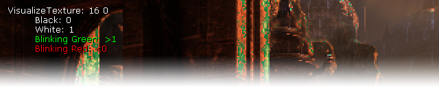
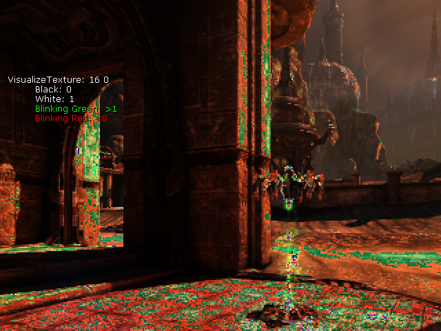
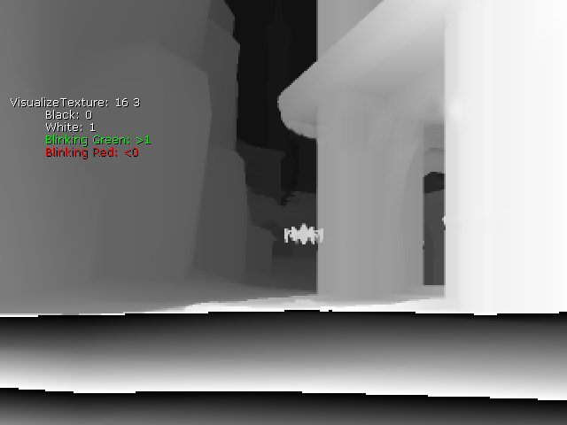

UDN
Search public documentation:
VisualizeTextureCH
English Translation
日本語訳
한국어
Interested in the Unreal Engine?
Visit the Unreal Technology site.
Looking for jobs and company info?
Check out the Epic games site.
Questions about support via UDN?
Contact the UDN Staff
日本語訳
한국어
Interested in the Unreal Engine?
Visit the Unreal Technology site.
Looking for jobs and company info?
Check out the Epic games site.
Questions about support via UDN?
Contact the UDN Staff
VisualizeTexture 命令

概述
应用
VisualizeTexture <TextureId> [<Mode>] [UV0/UV1/UV2] [BMP] [FRAC/SAT]: TextureId: 0 = <off> 1 = 330x222 FilterColor 2 = 1312x880 SceneColor 3 = 1312x880 SceneColorRaw 4 = 1312x880 SceneColorFixedPoint <INVALID> 5 = 1312x880 SceneDepthZ <INVALID> 6 = SmallDepthZ <INVALID> 7 = ShadowDepthZ <INVALID> 8 = DominantShadowDepthZ <INVALID> 9 = 400x400 TranslucencyShadowDepthZ <INVALID> 10 = ShadowDepthColor 11 = DominantShadowDepthColor 12 = 400x400 TranslucencyShadowDepthColor 13 = ShadowVariance <INVALID> 14 = 1312x880 LightAttenuation 15 = 656x440 TranslucencyBuffer 16 = 656x440 TranslucencyBuffer2 17 = 1312x880 TranslucencyDominantLightAttenuation 18 = 1312x880 AOInput 19 = 1312x880 AOOutput 20 = 1312x880 AOHistory 21 = 1312x880 VelocityBuffer 22 = QuarterSizeSceneColor <INVALID> 23 = 656x440 FogFrontfacesIntegralAccumulation <INVALID> 24 = 656x440 FogBackfacesIntegralAccumulation 25 = HitProxy 26 = FogBuffer <INVALID> 27 = 330x222 FilterColor2 28 = 1312x880 DoFBlurBuffer <INVALID> 29 = StereoFix 30 = LUTBlend 31 = TexturePoolMemory <INVALID> 模式(示例): RGB =0..1范围内的RGB值 (默认) *8 = RGB * 8 A = 0..1范围内的alpha通道 A*16 = Alpha * 16 RGB/2 = RGB / 2 InputMapping（输入映射）: UV0 = 左上方的视图（默认） UV1 = 全部贴图 UV2 = 左上方的视图，具有2个贴图像素的边界 标志： BMP = 将位图保存到屏幕截图文件夹(不是在游戏机平台上，经过正规化处理) FRAC =在着色器中使用frac() (默认) SAT =在着色器中使用saturate() VisualizeTexture 0
可视化着色器
颜色编码


已知问题
- 在D3D10 中不能显示屏幕上的贴图。
- 某些贴图的大小还不能显示(可以在代码中很容易地进行修复，但是无论如何我们都会修改那些代码)。
- 当贴图不能显示时(比如由于INVALID的原因)，那么些指出贴图不能使用的图片也不能很好地显示。
- 对于经常被重新使用的贴图，当查看缓存时可能仅显示最后一次的使用情况。对于这个问题是有解决方案的(比如，每次重新使用贴图时添加索引、复制那些数据,或阻止重新使用贴图)，但是这些方法可能会导致其它的负面效果(比如，更多的内存使用量或者改变输出结果等)。